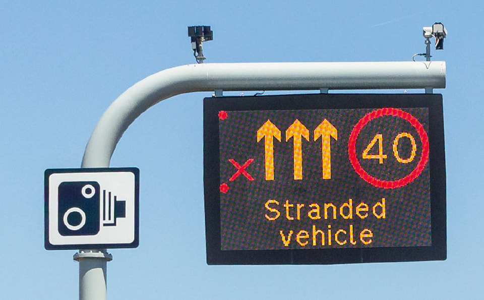
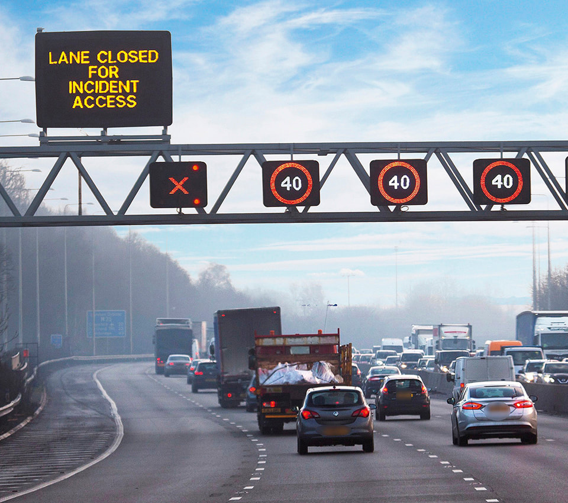

Motorways (253 to 273)
2. Motorway signals (255 to 258)
255
Signs and signals (download ‘Light signals controlling traffic’) are used to warn you of hazards ahead. For example, there may be an incident, fog, a spillage or road workers on the carriageway which you may not immediately be able to see.
256
A single sign or signal can display advice, restrictions and warnings for all lanes.
Signs and signals (download ‘Light signals controlling traffic’) are used to warn you of hazards ahead. For example, there may be an incident, fog, a spillage or road workers on the carriageway which you may not immediately be able to see.
256
A single sign or signal can display advice, restrictions and warnings for all lanes.
Lane specific signs and signals can display advice, restrictions and warnings that apply to individual lanes.
257
Amber flashing lights. These signals warn of a hazard ahead. You should
Amber flashing lights. These signals warn of a hazard ahead. You should
- reduce your speed
- be prepared for the hazard
- only increase your speed when you pass a signal that is not flashing, or a sign displaying a national speed limit or the word ‘END’, and you are sure it is safe to do so.
258
Red flashing light signals and a red ‘X’ on a sign identify a closed lane in which people, stopped vehicles or other hazards are present. You
- MUST follow the instructions on signs in advance of a closed lane to move safely to an open lane
- MUST NOT drive in a closed lane. A sign will inform you when the lane is no longer closed by displaying a speed limit or the word ‘END’

Rule 258: signals and signs indicating lane closures

Rule 258: signals and signs indicating lane closures
Be aware that
- there can be several hazards in a closed lane
- emergency services and traffic authorities use closed lanes to reach incidents and help people in need
- where the left lane is closed at an exit slip road, this means that the exit cannot be used.
- MUST NOT go beyond the sign in any lane or use the hard shoulder to avoid the road closure unless directed to do so by a police or traffic officer.
Lane and road closures indicated by red flashing lights are enforced by the police.
Laws RTA 1988 sects 35 & 36 as amended by TMA sect 6, TSRGD 2016 reg 3 and sched 15, MT(E&W)R reg 9 & MT(S)R reg 8.
Laws RTA 1988 sects 35 & 36 as amended by TMA sect 6, TSRGD 2016 reg 3 and sched 15, MT(E&W)R reg 9 & MT(S)R reg 8.